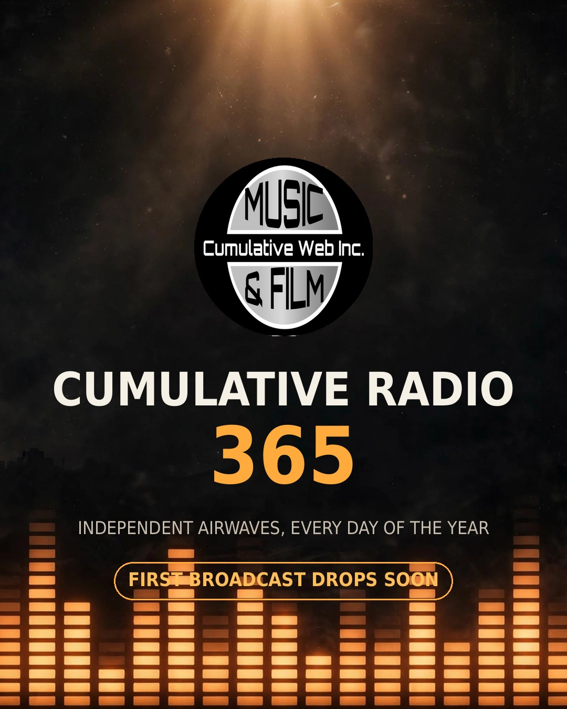

Cumulative Web Inc launches Cumulative Radio 365 — a year-round station for independent artists

Cumulative Radio 365 launch art. Artist submissions are open and free; the first broadcast drops soon. Art: CWI.
September 29, 2026 — Cumulative Web Inc announces Cumulative Radio 365, a new internet radio station built for independent artists and producers, programmed 365 days a year. Artist submissions are open now and free; the first broadcast drops soon.
The announcement
Cumulative Web Inc has launched Cumulative Radio 365, its own radio station dedicated to independent music. The station's website and artist submission portal are live at cumulative-radio-365.pages.dev — submissions are open, with a listener notify list and public live metrics. The broadcast stream itself is off air for now: the first broadcast has not aired yet while launch programming is finalized, and the site states this plainly.
What artists get
Independent artists and producers can submit tracks for rotation consideration through a free submission form at cumulative-radio-365.pages.dev/submit. A submission puts a track in consideration for rotation only — nothing airs without a separate verified broadcast license from the rights holder. There is no submission fee and no pay-to-play.
What listeners get
Listeners can join a notify-me list on the station homepage to hear about the first broadcast before it airs. The station publishes live metrics — signups, submissions, and page views — counted from real events, starting at zero.
How submission and rights work
Every artist submission requires a rights attestation before it can be sent. The submitter must confirm, via a required checkbox: "I confirm I own or control the rights to this recording and grant Cumulative Web Inc permission to consider it for broadcast." Submissions without this confirmation are rejected. Submitting music is not proof of broadcast rights. The checkbox grants permission to consider the track only — a separate, verified broadcast license from the rights holder is required before any track can air. Artists retain their rights, always; the attestation covers consideration for broadcast only.
Links
- Station homepage — Cumulative Radio 365Artist submissions, listener notify list, live metrics.
- Artist submission formFree. Rights attestation required on every track.
- Cumulative Web IncBusiness and sync inquiries: hp@cumulativeweb.com.
Are you an artist?
Want your track in rotation on a station built for independents? Submissions are open and free — it takes a minute — and a submission puts your track in consideration only. Nothing airs without a separate verified broadcast license from the rights holder.
Claim appendix
Per CWI press claim rules, every claim in this release cites its source and verification date:
- Station name "Cumulative Radio 365"; station website and submission portal live at https://cumulative-radio-365.pages.dev/ (HTTP 200, verified 2026-09-29). The broadcast stream itself is off air.
- Artist submissions open and free; rights attestation required on every submission (form rejects without confirmation; endpoint-tested 2026-09-29).
- First broadcast has not aired; station site displays "off air for now" state (verified on live homepage 2026-09-29).
- Metrics are real event counts starting at zero (API-verified 2026-09-29).
- Contact hp@cumulativeweb.com (CWI published business contact).
- No listener counts, plays, placements, testimonials, or adoption claims are made in this release.
- Submission checkbox grants consideration only; a separate verified broadcast license from the rights holder is required before any track airs (stated on the live submission form, verified 2026-09-29).